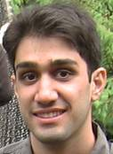
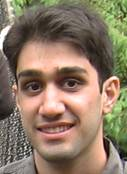

|
|


 



Graduate Student Alumni
| Student | Degree | Position after Autonomy Lab | City
|
|---|
| Pante a Jabbari
| MSc Computing Science 2011
| (software engineering)
| Vancouver, Canada
|
| Yaroslav Litus
| PhD Computing Science 2010
| Google Inc.
| Waterloo, Canada
|
| Jens Wawerla
| PhD Computing Science 2010
| Postdoctoral Researcher, Engineering Science, SFU
and independent consultant in remote environmental monitoring systems.
| Vancouver, Canada
|
| Alex Couture-Beil
| MSc Computing Science 2010
| Activision (this game
had over 2 million concurrent players online).
| Vancouver, Canada
|
| Adam Lein
| MSc Computing Science 2010
| Software Engineer at Mintec, Inc. and dueling.
| Vancouver, Canada
|
| Pooya Karimian
| MSc Computing Science, 2007
| Worio, an Internet start-up.
| Vancouver, Canada
|
| Sarah Brown
| (incomplete MSc)
| Software Engineer at Mintec, Inc.
| Vancouver, Canada
|
| Pawel Zebrowski
| MSc Computing Science, 2007
| IT Manager at InfoMine
| Vancouver, Canada
|
| Yinan (Carl) Zhang
| MSc Computing Science, 2006
| Now at an Internet start-up.
| Vancouver, Canada
|
| Roozbeh Mottaghi
| MASc, Engineering Science, 2006
| PhD student at UCLA
| Los Angeles, CA, USA
|
| Mauricio Zuluaga
| MSc Computing Science, 2005
| Google, Inc.
| Santa Monica, CA, USA
|
Undergraduate Student Alumni
- Lorin Beer, NSERC USRA 2011
- Will Storey, Summer research student, 2011
- Peter Neufeld, Summer research student, 2011
- Ben Saunders, Summer research student, 2011
- Jeremy Asher, Co-op intern, 2008
- Pouya Alagheband, NSERC USRA 2006
- Jeremy Holman, NSERC USRA 2005
- Pouya Bastani, NSERC USRA 2004. MSc in Applied Mathematics, SFU 2009.
- Raj Nallapothola
BSc, Computing Science, 2004
|